P2-0054 · этап 3: Качество и СК 2.0 только выбирают места
Стенд с подставными данными, 27.10.2026. Слева — как сейчас, справа — как предлагаю. Изменения касаются только проектов, места которых ведёт «Компания». Проекты RBI (места ведёт Качество) до перевода остаются как сейчас.
1. Качество → Настройки → «Объекты и планы» · этаж проекта ядра
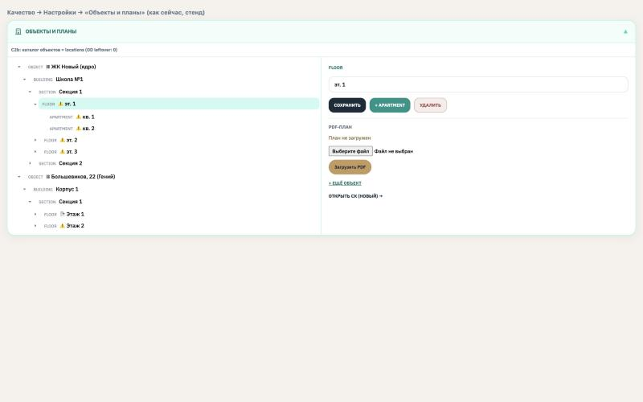
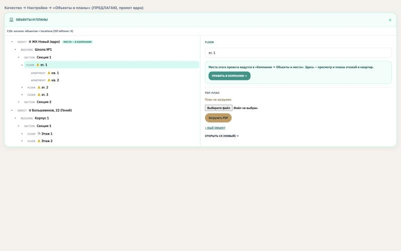
2. То же · квартира проекта ядра
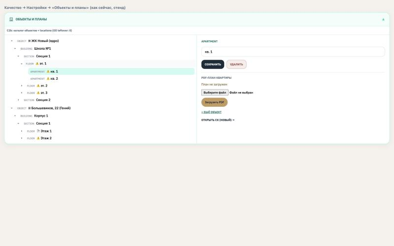
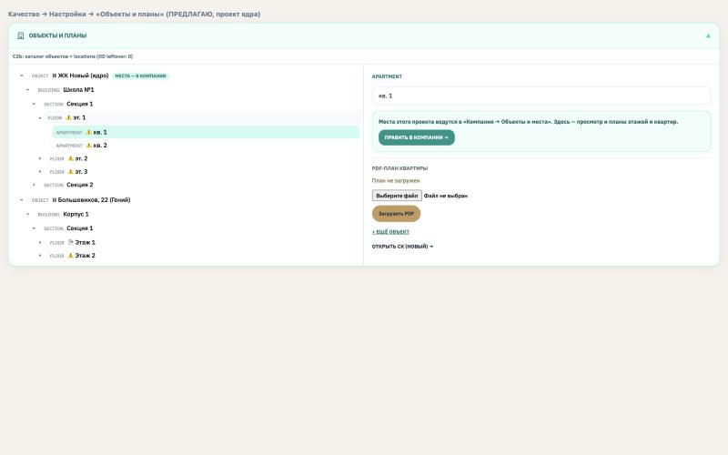
Телефон, 375 px
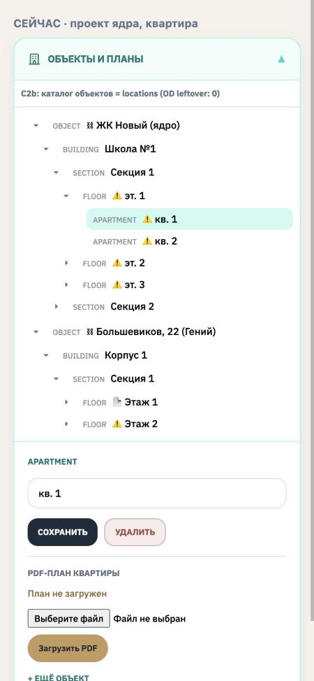
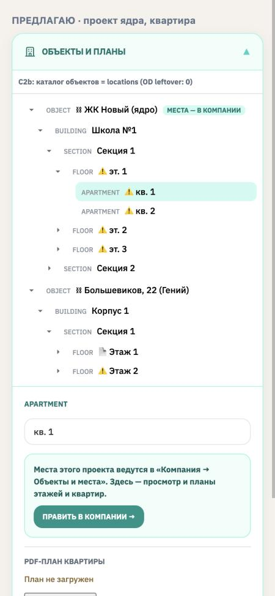
3. Проект «как RBI» (места ведёт Качество) — без изменений
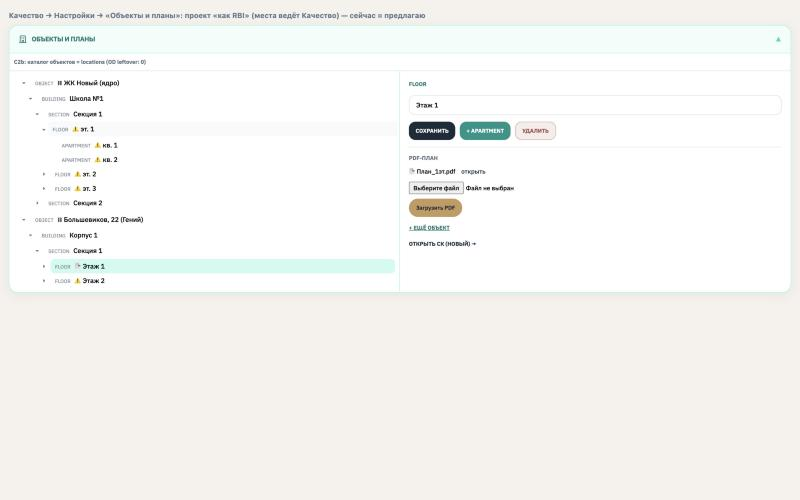
4. СК 2.0 → «Передача · шахматка» · корпус проекта ядра
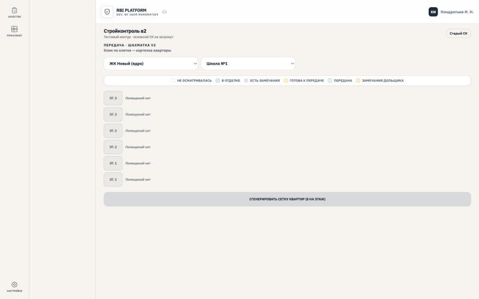
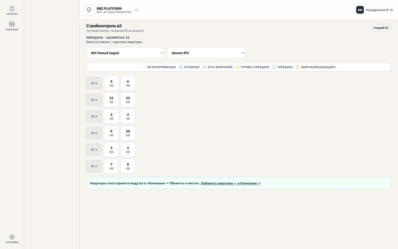
Сейчас квартиры из «Компании» в шахматке не видны («Помещений нет»): помещение СК заводится только вместе с квартирой в справочнике Качества. Предлагаю: шахматка берёт квартиры из дерева, помещение СК (статус передачи, план квартиры) заводится само при первом открытии карточки. Кнопка «Сгенерировать сетку квартир» создаёт квартиры — в проекте ядра её заменяет ссылка «Добавить квартиры — в Компании →».
Телефон, 375 px
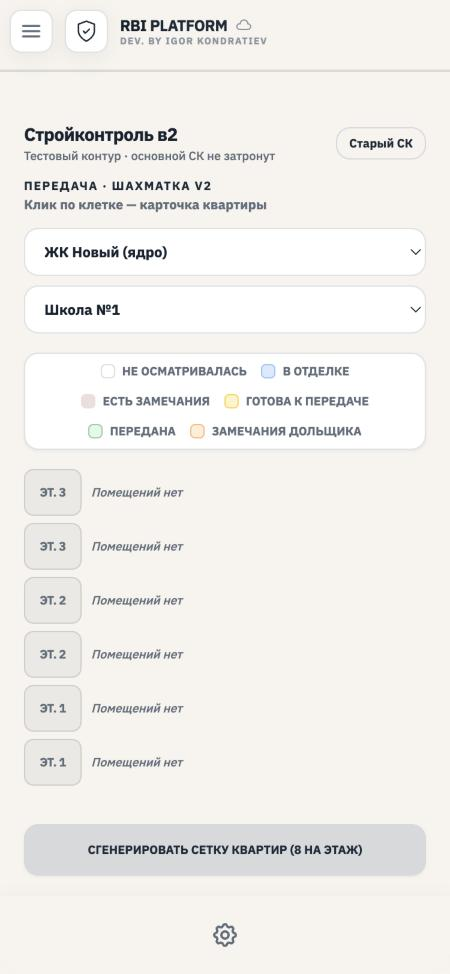
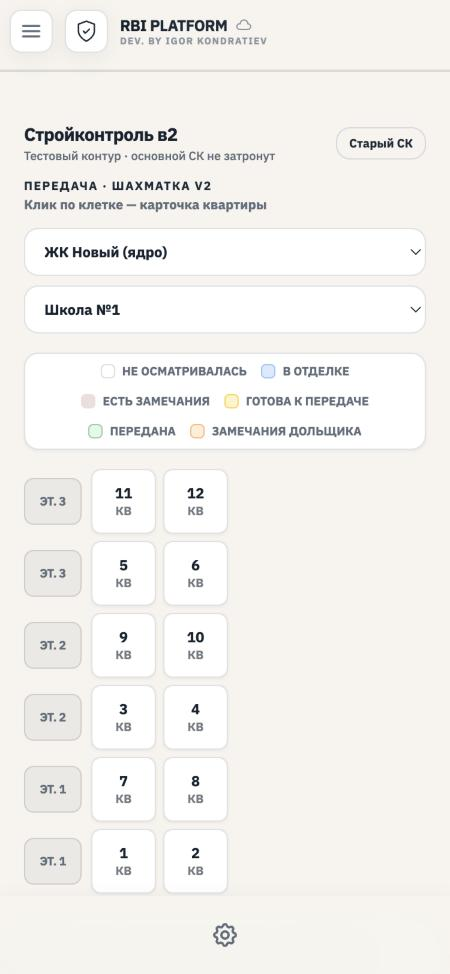
Для сравнения — проект «как RBI», без изменений
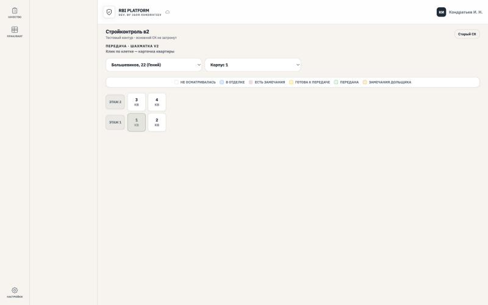
5. Старая правка с телефона (сделана до перевода, не отправлена)
После перевода без доработки: отправка мест остановится на этой правке, следом не уйдут и планы этажей.
Правка «Этаж 1 → Этаж 1А» не отправлена и снята на этом телефоне. Остальные данные отправлены.
Предлагаю: сообщение один раз, правка снимается, остальные записи (проверки, замечания, приёмки, планы) отправляются дальше.
Опись: что было → где теперь → что при нажатии
Только для проектов, места которых ведёт «Компания». У проектов RBI до перевода — всё в столбце «Сейчас».
| № | Сейчас | Где в предложении | Что при нажатии |
|---|---|---|---|
| 1 | Дерево мест: раскрыть / свернуть, выбрать узел | там же, без изменений | как сейчас |
| 2 | Отметки ⚠️ / 📄 / 🔗 у этажей, квартир, ЖК | там же | как сейчас |
| 3 | Плашка «C2b: каталог объектов…» | там же | — |
| 4 | Поле «Название» места | там же, только просмотр | менять — в «Компании» |
| 5 | «Сохранить» (переименовать место) | заменено «Править в Компании →» | открывает «Компания → Проекты и объекты» на этом проекте, вкладка «Объекты и места» |
| 6 | «+ building / section / floor / apartment» | то же — «Править в Компании →» | там «+ Объект», «+ Внутрь», «Добавить этажи», «Копировать секцию» |
| 7 | «Удалить» место с веткой | то же — «Править в Компании →» | там меню «⋯ → Удалить» |
| 8 | ЖК (верх дерева): «Сохранить» — переименовать ЖК | там же, без изменений | переименовывает проект (как сейчас) |
| 9 | ЖК: «+ building», «Удалить» | «Править в Компании →» | корпуса ЖК — в «Компании» |
| 10 | Этаж: «PDF-план» — открыть, «Загрузить PDF» | там же, без изменений | как сейчас |
| 11 | Квартира: «PDF-план квартиры» — «Загрузить PDF», «Снять план» | там же, без изменений | как сейчас |
| 12 | «+ Объект» / «+ ещё объект» (новый ЖК) | там же, без изменений | как сейчас |
| 13 | «Открыть СК (новый) →» | там же | как сейчас |
| 14 | СК 2.0, шахматка: клетки квартир (только с помещением СК) | клетки — все квартиры дерева | карточка квартиры; помещение СК заводится при первом открытии |
| 15 | «Сгенерировать сетку квартир (8 на этаж)» | подсказка + «Добавить квартиры — в Компании →» | открывает «Компанию» на этом проекте |
| 16 | Карточка квартиры: «Статус передачи», «Открыть» план, «Замечания на плане», «Приёмка» | без изменений | как сейчас |
| 17 | Карточка квартиры: «Удалить помещение» (удаляло и квартиру) | «Править в Компании →» | квартиры удаляются в «Компании» |
| 18 | Замечания и приёмки на плане этажа: выбор ЖК → корпус → секция → этаж | без изменений | места «Компании» уже в списке (проверено на стенде) |
| 19 | Отправка старой правки места с телефона | сообщение, правка снимается | прочие данные отправляются дальше |
Ничего не удаляется: всё, что меняло места, переехало в «Компания → Объекты и места» (пункты 5–7, 9, 15, 17).